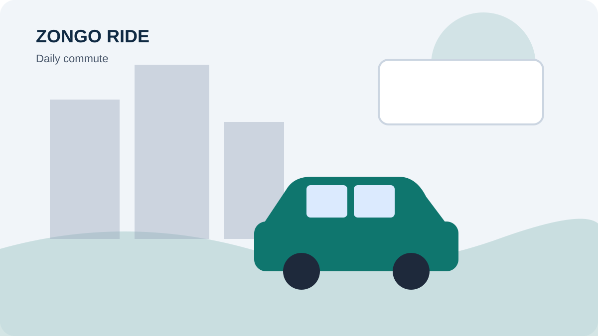

DRIVER GROWTH · PASSENGERS · EARNINGS
How to Become a Self-Employed Ride Driver
Before accepting your first passenger, prepare the legal, vehicle and business basics. Requirements vary by location, so check local licensing, insurance and vehicle rules rather than assuming one country’s requirements apply everywhere.

How to Become a Self-Employed Ride Driver is a question many current and prospective drivers ask when they want to make driving more organised and commercially worthwhile. The best approach is to build a service passengers can understand and trust, then measure whether each trip is worth the time and cost. This guide sets out practical steps you can adapt to your local market.
Check the rules before operating
Research the licensing, commercial insurance, vehicle inspection, tax and passenger transport rules that apply in your area. Requirements can differ by city, state and country and may depend on whether you operate privately, commercially or through a platform. Confirm details with the relevant official authority or qualified adviser.
Create a simple booking routine
Check messages at set intervals, confirm the details of each enquiry and update your availability when you become busy. Keep a written record of confirmed trips so you do not double-book. A reliable routine makes a small operation feel professional without requiring complicated software.
Prepare your car and documents
Check tyres, brakes, lights, seat belts, fluids, cleanliness and maintenance records. Keep required documents current and make sure the vehicle is suitable for the journeys you intend to offer. Do not accept trips that exceed legal passenger or luggage capacity.
Start with a manageable service area
Choose a small set of routes and working hours you can reliably cover. Learn how long trips take at different times and how much they cost to provide. Expand only when you can maintain the same standard of safety, punctuality and communication.
Put the advice into action
Start with one clear improvement rather than changing everything at once. Update your driver information, choose a manageable route or schedule, calculate the costs and make sure passengers can understand how to enquire. Track what happens over the next several weeks. If a route produces too much unpaid waiting or too many empty return journeys, reconsider its price or availability.
Keep your service professional as it grows. Be punctual, communicate honestly, respect passenger privacy and follow local transport and insurance requirements. Never rely on an online article as a substitute for checking the rules where you operate. Your long-term reputation depends on safe, reliable journeys and accurate information.
How Zongo Ride can support your driver visibility
Drivers can visit Zongo Ride to learn about the service and access the available driver registration route. Where driver onboarding and route listings are available, complete the requested information, publish genuine routes and fares, and keep availability updated. Passengers make their own booking decisions, so a complete profile and responsive service are important. No platform can promise a specific number of passengers or a guaranteed income.
Driver takeaway: Make your offer clear, price trips responsibly, keep your information current and use every completed journey as an opportunity to improve the service.